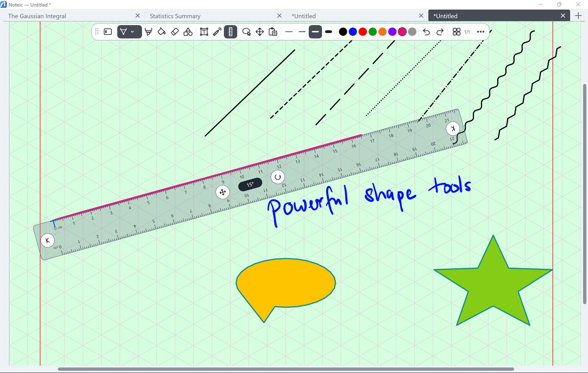

Ruler and protractor
Draw straight lines at any angle along the ruler, and measure and draw angles with the protractor.

Show the ruler or protractor#
- Tap Ruler in the toolbar, or press Ctrl+L. Tap again to hide it.
- Press and hold the button to choose Ruler or Protractor. Only one is shown at a time.
Ruler#
- Draw: with the pen or highlighter tool, draw along the ruler's long edge. The line follows the edge exactly, with pen pressure.
- Move: drag the ruler with a finger, or use the cross in the middle.
- Turn: drag the round arrow. The angle shows in the middle of the ruler.
- Length: drag the arrows at both ends.
The scale shows real millimeters at the current zoom, labeled in centimeters.
Protractor#
- Draw an arc: with the pen or highlighter tool, trace along the rim. Lines from the center mark the start and the end, and the angle is shown while you draw.
- Move: drag the inner area with finger, pen or mouse.
- Size: drag the round handle with the double arrow below the center.
The protractor lies on the page: it moves and zooms with the paper. Its scale runs from 0° to 359°.